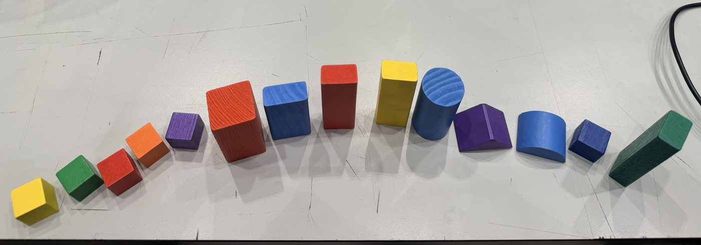

Leo Rover: colour-sorting robot
Team 7 is building a rover that searches an area on its own, picks up coloured blocks with a myCobot arm and drops each one in the matching bin. My part is vision: finding the blocks with the RealSense colour camera and measuring their 3D position with its depth sensor.
First tests (Oct 2026)
- Brought up the RPLidar and the RealSense D435 on the rover, and viewed the lidar scan live in RViz from a laptop.
- Full-size depth video (848×480, 30 fps) reached only about 5–7 fps on the rover's Raspberry Pi, so vision processing should run on the on-board Intel NUC.
- YOLO11n on a laptop CPU took about 95 ms per frame. The pretrained model called our red block a "hot dog", and a model I trained on a public, top-down block dataset found almost nothing from a side view. Next: training on our own low-angle images.